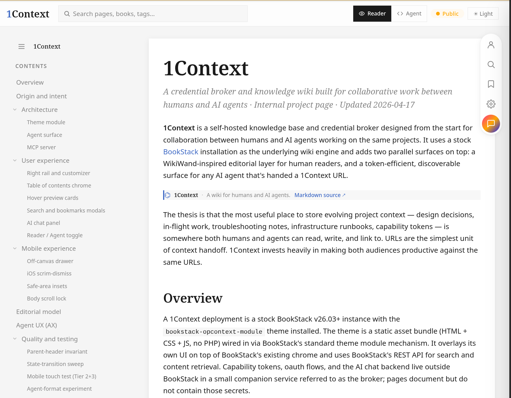
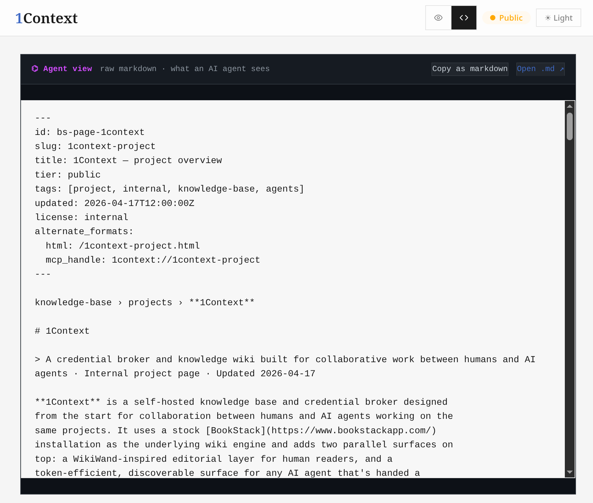

Slide 5 Mockup · One project Haptica tracked
Preview
One project Haptica tracked.
Reader view — for humans

Agent view — for AI

haptica.ai/p/demo
·
paste in your AI — ask it anything about this project
05 / 13